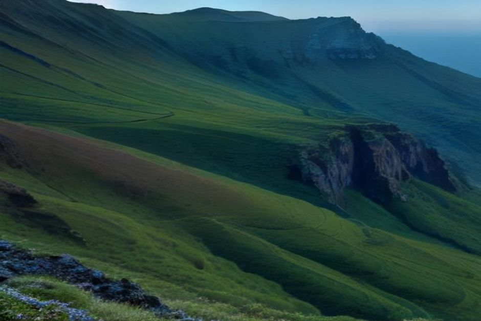
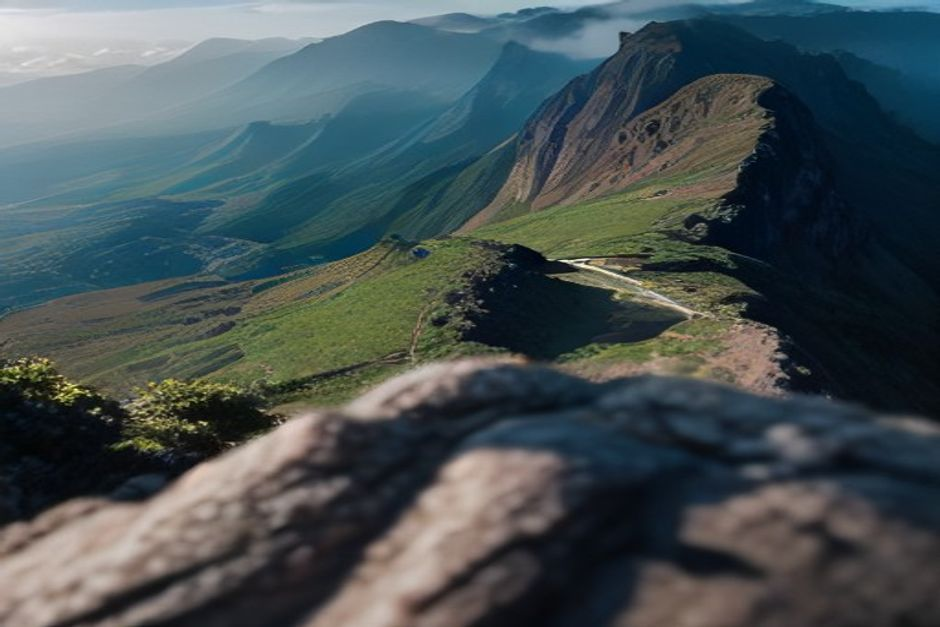

O ponto mais alto da Madeira é o Pico Ruivo, com 1862 metros de altitude. Não é o Pico do Arieiro, como muita gente julga, e também não existe nenhum "Cabo Ruivo" na ilha: o nome certo é Pico, e a diferença de quarenta e tal metros muda o dia inteiro, porque ao Ruivo só se chega a pé.
Altura do Pico Ruivo: 1862 metros, e o Arieiro fica atrás
Quem pesquisa a altitude do Pico Ruivo quer, quase sempre, tirar uma dúvida de café: qual é o pico mais alto da Madeira, o Ruivo ou o Arieiro? É o Ruivo. Os números ficam assim:
- Pico Ruivo: 1862 m, o ponto mais alto da ilha.
- Pico das Torres: 1851 m, logo a seguir.
- Pico do Arieiro: 1818 m, o terceiro.
O Arieiro tem fama de ser o mais alto porque é o que se alcança de carro: há estrada e parque de estacionamento lá em cima. O Ruivo não tem estrada nenhuma. Todos os caminhos até ao cume são a pé, e é em parte por isso que parece mais calado e mais selvagem do que o vizinho, que todos fotografam.

Homem em Pé: o caminho curto desde Achada do Teixeira
Se procura o "homem em pé" do Pico Ruivo, é aqui que ele está. Achada do Teixeira é o ponto de partida do PR1.2, a Vereda do Pico Ruivo, e fica junto a uma formação de basalto que na zona se chama Homem em Pé. Chega-se lá de carro, o que faz toda a diferença para quem não quer madrugar para uma caminhada de crista.
O percurso tem 2,8 km só de ida, ou seja, 5,6 km ida e volta, por um caminho bem pavimentado. A subida é constante mas razoável: conte com cerca de uma hora e meia em cada sentido. Está classificado como moderado, não como difícil, e é a escolha da maioria das famílias e de quem vai pela primeira vez. Em dias frescos, ténis e um casaco leve chegam.
Do Arieiro ao Ruivo: o PR1 é outra conversa
O PR1, a Vereda do Areeiro, liga o Pico do Arieiro ao Pico Ruivo por cerca de 6 km de crista vulcânica exposta. Demora à volta de três horas só de ida, e isso sem contar o regresso. Pelo caminho passam-se cinco túneis sem iluminação, abertos em tufo vulcânico, com quedas a pique dos dois lados e troços de escadas e corrimãos fixados à rocha.
Muitos colocam-no entre os trilhos de crista mais espetaculares da Europa, e é também dos mais sérios da ilha. Não é escalada técnica, mas também não é um passeio de domingo. Leve lanterna de cabeça para os túneis e calçado com boa sola. Se for dos que sofrem com alturas, o PR1.2 dá-lhe o mesmo cume com muito menos adrenalina.
Qual é mais difícil: o Pico Ruivo ou o Pico do Arieiro?
Depende do caminho que escolher. A subida curta a partir de Achada do Teixeira é mais fácil do que a caminhada até ao cume do Arieiro. Já a travessia entre os dois, pelo PR1, é claramente a mais exigente. Resumindo:
- PR1.2, Achada do Teixeira: 2,8 km só de ida, cerca de 1,5 h, caminho pavimentado.
- PR1, Arieiro: cerca de 6 km só de ida, cerca de 3 h, cinco túneis às escuras e quedas expostas.
Reservas em 2026: o SIMplifica e o código QR
Os dois trilhos exigem reserva. Desde a reabertura na primavera de 2026, depois de um encerramento por causa de um incêndio, o acesso ao PR1 e ao PR1.2 faz-se pelo sistema SIMplifica, com horário marcado e uma taxa pequena: cerca de 4,50 €, ou cerca de 3 € se reservar através de um operador registado em protocolo.
Os residentes na Madeira e as crianças até aos 12 anos não pagam, mas têm de registar o horário na mesma. No início do trilho, os vigilantes leem um código QR. O melhor é reservar com um ou dois dias de antecedência, em vez de aparecer à sorte.
Há café, restaurante ou alojamento no cume?
Não. A Casa de Abrigo do Pico Ruivo fica mesmo abaixo do cume e funciona como refúgio de montanha, não como café. Serve para se abrigar com mau tempo, mas não conte comprar lá comida nem água. Há outra casa de abrigo junto ao início do trilho, em Achada do Teixeira. Leve tudo o que precisar: depois de entrar no trilho, não há serviço de espécie alguma.
Quando ir e o que levar na mochila
De manhã cedo. As nuvens tendem a acumular-se ao longo do dia, e o mar de nuvens por baixo dos picos está mais nítido antes do meio da manhã. Mas é uma tendência, não uma promessa: há dias em que o cume amanhece fechado.
A 1862 metros faz 10 a 15 °C menos do que no Funchal, e o vento levanta-se depressa e quase sem aviso. Por isso, um dia quente na costa não quer dizer nada lá em cima. Leve:
- roupa em camadas, qualquer que seja a estação;
- calçado resistente, sobretudo para o PR1;
- água e algo para comer, porque não há onde comprar;
- lanterna de cabeça, se for pela crista e pelos túneis;
- a confirmação da reserva SIMplifica no telemóvel.
Depois do cume, a ilha vista do mar
O Pico Ruivo mostra a espinha vulcânica da Madeira e, numa manhã limpa, um mar de nuvens debaixo dos pés. A outra metade da ilha vê-se da água. Num passeio de barco privado com a Chifbay, a costa sul aparece ao contrário: a falésia do Cabo Girão, com 580 metros, a subir diretamente do Atlântico, e paragens para nadar que quem anda nas serras raramente chega a ver.
O barco sai da Marina do Funchal, cais C, e é só para o seu grupo, até 5 pessoas, com dois skippers licenciados da Madeira. Há duas formas de o fazer:
- Passeio de dia, às 10:00 ou às 14:00: 2 h 30 até à Ribeira Brava por 500 EUR, ou 3 h até à Ponta do Sol por 600 EUR. Passa por Câmara de Lobos e pelo Cabo Girão, com banho e pranchas de paddle na Fajã dos Padres. Veja o passeio de dia.
- Pôr do sol, que parte 1 h 15 antes do pôr do sol, todo o ano: 2 h até ao Cabo Girão por 400 EUR, ou 2 h 30 até à Ribeira Brava por 500 EUR, sem paragem para banho. Veja o passeio ao pôr do sol.
Os preços são para o barco inteiro, nunca por pessoa. Em todos os passeios há comida e bebidas a bordo, um vídeo 360° Insta360, imagens de drone (se o tempo deixar) e fotografias tiradas com máquina a sério. O cancelamento é gratuito até 24 horas antes da partida. Golfinhos, baleias ou uma luz bonita não se prometem: quando aparecem, são uma prenda.

Como juntar a serra e o mar no mesmo dia
Uma boa maneira de aproveitar um dia na Madeira é subir de manhã e embarcar à tarde. Reserve o PR1.2 para a primeira hora, desça com tempo para almoçar no Funchal e apareça no cais C para o passeio das 14:00. Se preferir o pôr do sol, a mesma manhã de montanha encaixa na perfeição. Pode ver outras ideias em melhores passeios de barco na Madeira, ou tirar dúvidas na página de informações práticas.
Seja qual for o caminho, o Pico Ruivo paga o planeamento: reserve o horário, vista-se para a altitude e estará no ponto mais alto de uma ilha que a maioria dos visitantes só conhece a partir do terceiro.